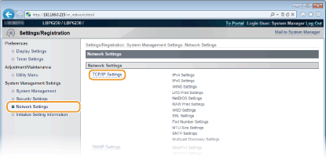
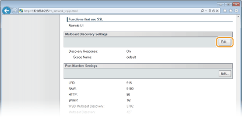
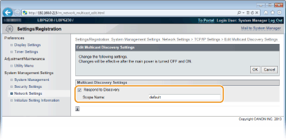

0KU8-02K
É possível usar o software de gerenciamento como o imageWARE Enterprise Management Console* para facilitar a coleta e o gerenciamento de diversas informações sobre os dispositivos de rede. Em um ambiente onde este software estiver instalado, as informações sobre definições de dispositivos e erros são coletadas através de um servidor na rede. Se a impressora estiver conectada a uma rede imageWARE, o imageWARE pesquisa a rede em busca da impressora usando protocolos como Service Location Protocol (SLP). As definições de SLP podem ser especificadas através do Remote UI.
* Para obter mais informações sobre o imageWARE, entre em contato com o seu agente local autorizado Canon.

|
Para alterar o número de porta do protocolo SLP Alterando os números de portas
|
1
Inicie o Remote UI e faça o logon no modo Administrador Sistema. Iniciando o Remote UI
2
Clique em [Settings/Registration].

3
Clique em [Network Settings]  [TCP/IP Settings].
[TCP/IP Settings].

4
Clique em [Edit] em [Multicast Discovery Settings].

5
Marque a caixa de seleção [Respond to Discovery] e digite as informações necessárias.

[Respond to Discovery]
Marque a caixa de seleção para configurar a impressora para responder a pacotes de descoberta multicast imageWARE e ativar o gerenciamento através do imageWARE. Se não quiser responder, desmarque a caixa de seleção.
Marque a caixa de seleção para configurar a impressora para responder a pacotes de descoberta multicast imageWARE e ativar o gerenciamento através do imageWARE. Se não quiser responder, desmarque a caixa de seleção.
[Scope Name]
Para incluir a impressora em um escopo específico, digite até 32 caracteres alfanuméricos para o nome do escopo.
Para incluir a impressora em um escopo específico, digite até 32 caracteres alfanuméricos para o nome do escopo.
6
Clique em [OK].
7
Reinicie a impressora.
Desligue a impressora, espere pelo menos 10 segundos e ligue novamente.